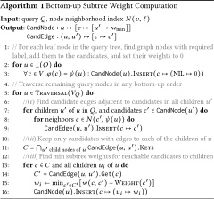

1 Introduction
Heterogeneous information networks (HIN) [16], i.e., graphs with node and/or edge labels, have recently attracted a lot of attention for their ability to model many complex real-world relationships, thereby enabling rich queries. Often labels are used to represent types of nodes and their relationships:
Consider a photo-sharing social network with three vertex type labels: user, photo, and group. Users are connected to the photos they upload, and photos are connected to groups when they are posted there. Finally, users can connect to groups by joining them. To maintain a vibrant community and alert users about potentially interesting photos, the social network might run queries of the type shown in Figure 1: given photo1 and two users, user1 and user2, find alternative groups (matching nodes for group2) to post the photo in order to reach user2 without spamming her directly. This is achieved by identifying a user belonging to both groups (user3), who can post the photo in the other group. There might be hundreds of matching triples (group1, user3, group2), and there would be many more if user2 was not given in advance. Under these circumstances, the goal often is not to find all results, but only the most important ones. Importance can be determined based on node and edge weights, e.g., weights representing distances (or similarities). Then the query should return the lightest (or heaviest) pattern instances. For example, the weight of a group may be based on its number of members, the weight of a user on how active s/he is, and the weight of a link on the timestamp when it was established (to give preference to long-term relationships or more recent photo posts), or the sum of the PageRanks of its endpoints.

These types of rich query semantics also appears in other contexts, e.g., root-cause analysis in distributed systems. The Vitrage service for OpenStack [4] makes use of path and tree patterns to specify rules for automatic root cause deduction of alarms raised by virtual machines and hardware. Large OpenStack deployments—involving thousands of hosts and tens of thousands of virtual machines and hardware components—necessitate pattern matching algorithms to deduce the root cause of such patterns in near real-time.
We focus on efficient solutions for acyclic pattern queries on general labeled graphs. To this end, we propose the notion of any-k algorithms, a novel variant of top-k algorithms. A top-k algorithm exploits knowledge about the given k to produce the top-k lightest patterns faster than the “full enumeration” algorithm (which first produces all results and then ranks them by weight). In practice, it is difficult for users to know the value of k upfront (“when will I have seen enough?”). An any-k algorithm addresses this issue by not requiring a pre-set value for k. Instead, an any-k algorithm
- returns the top-ranked result as quickly as possible,
- then returns the second-ranked result next, followed by the third-ranked, and so on,
- until the user is satisfied and terminates the process.
In other words, the ranked enumeration can be stopped anytime and should then return as many top results as possible.
The queries we are interested in correspond to subgraph isomorphism, which is known to be hard in general. In particular, subgraph isomorphism on homogeneous graphs is already NP-complete in the size of the query (even for the path case as Hamiltonian path is a special case). And labeled graphs contain unlabeled graphs as a special case. On the other hand, labels provide more opportunities for achieving better performance in practice by exploiting heterogeneity where present. Note that a key reason for hardness of isomorphism lies in the “non-repetition constraint,” i.e., the same graph node cannot occur more than once in an answer. Without this constraint, pattern search would correspond to the easier subgraph homomorphism problem which can be solved in PTIME.
Our approach is based on three key insights: (1) Constraints on node or edge labels can dramatically reduce the number of matching results; (2) Mutually exclusive type labels “narrow the gap” in cardinality between the set of isomorphic subgraphs and the set of homomorphic subgraphs (which includes all isomorphic ones). The reason is that query pattern nodes of different types cannot be mapped to the same graph node, even when the algorithm is only searching for homomorphism. In the example photo-sharing network, users and photos cannot stand in for a group node. In the extreme, if all nodes in the query pattern have different types, then any solution for subgraph homomorphism also satisfies isomorphism. This suggests an approach that aggressively prunes for the homomorphism case and then filters based on node repetitions in the result patterns; and (3) In many real-world cases, output size is small relative to the combinatorial size of the pattern search space. Hence algorithm complexity bounds based on output size promise to deliver practically meaningful performance guarantees.
Overview of the Solution. Our approach combines three conceptually separate steps into a two-phase algorithm.
1) The search space of possible homomorphic patterns is pruned to the provably smallest representation of the original graph. We use insights from the well-known Yannakakis algorithm [39] for evaluating answers to acyclic conjunctive queries to create this representation in just one bottom-up and a subsequent top-down sweep through the query tree.
2) We devise a novel any-k algorithm for enumerating homomorphic tree patterns. It uses dynamic programming to perform a bottom-up cost calculation, followed by a top-down guided search.
3) A final pruning step removes those homomorphic patterns that do not satisfy the isomorphism requirement.
We show how to combine the first two steps into just one bottom-up and one top-down phase. We then integrate the third step into the combined top-down phase. Our experiments show that even on graphs with millions of nodes and tens of millions of edges, we can return the top-ranked results in just a few milliseconds, whereas alternative approaches would take orders of magnitude longer. Our implementation can be downloaded from [2].
Main contributions. We devise KARPET (Kernelization1 And Rapid Pruning-based Exploration for Tree patterns), a novel and highly performant any-k algorithm that can quickly identify top-ranked tree patterns in large graphs, then return the next lower-ranked ones when given extra time.
1) KARPET is designed as an anytime ranking algorithm that enumerates homomorphic subtrees in order of total edge weight with strong theoretic guarantees: We show that our worst-case time complexity for returning all homomorphism results is identical to full enumeration. In addition, KARPET provides strong upper bound guarantees for the time to return the top-ranked homomorphism result, as well as the time between returning a homomorphism result and the next. For cases with “small gap” between homomorphism and isomorphism, i.e., when “sufficiently many” homomorphic patterns are also isomorphic patterns, these guarantees carry over to subgraph isomorphism.
2) We propose fast and effective local pruning operations that exploit the heterogeneity of labeled graphs, proving that they also guarantee strong global pruning properties. Intuitively, for subgraph homomorphism, we show that inexpensive pruning based on 1-node neighborhoods efficiently removes all candidate nodes that are not part of any result pattern.
3) In contrast to a lot of theoretical work on subgraph isomorphism algorithms, our algorithm is output-sensitive—its worst case complexity depends on the output size, which is smaller when the graph and the query are more heterogeneous, rather than being exponential in the size of the query pattern.
4) We show how to speed up the search for top-ranked isomorphic answers by pushing the pruning for non-repeating nodes into the incremental result enumeration algorithm.
2 Problem Definition and Hardness
Our goal is to find the lightest subgraphs of a labeled graph G that are isomorphic to a given tree pattern Q . Instead of returning all results at once after a long wait time, we set out to devise an anytime algorithm, which returns the top-ranked match as quickly as possible and then incrementally returns the remaining results over time.
An any-k algorithm is a variant of a top-k algorithm in which k is not known at the start of the algorithm. The algorithm can be interrupted anytime, returning the top-k results with k being as large as possible.
We define the weight of a pattern as the sum of edge weights. This also supports search for the “most reliable” pattern based on probabilities assigned to edges. Finding the pattern with the greatest probability of being connected, assuming independence, is equivalent to maximizing the sum of the logarithms of the edge probabilities. For our problem with a fixed query pattern, lightest and heaviest pattern search can be easily converted into each other. It is also straightforward to modify our approach to support pattern weight defined as minimum or maximum of edge weights. We present the formal definitions next. Table 1 summarizes important notation.
| Symbol | Definition |
|---|---|
| G(V, E) | A labeled graph with node set V and edge set E |
| L | Set of node labels |
| ϕ() | Function mapping nodes to labels |
| w() | Function mapping edges to weights |
| Q(VQ , EQ ) | Tree pattern with node set VQ and edge set EQ |
| ψ() | Required labels for a graph node matched to a query node |
| ⊥(Q) | Set of leaf nodes (or terminals) in Q |
| ⊤(Q) | Chosen root node in Q |
| N(v, ℓ) | Set of neighbors of v in G with label ℓ |
| λ() | Function mapping query nodes VQ to graph nodes V |
A Weighted Heterogeneous Information Network (HIN) is a labeled undirected graph G = (V, E, ϕ, w), where V is a set of vertices, E is a set of edges, ϕ is a node labeling function ϕ: V → L, and w is an edge weight function $w: E\rightarrow \mathbb {R}$ .
In many HINs, a node has at least two different kinds of labels: a unique node ID and a type (or class). In the photo-sharing network example (see Example 1.1), the labeling function assigns types such as “user” or “photo” to each node. Our approach can be easily extended to include multiple labels per node, as well as (multiple) edge labels, node weights, and directed edges. We omit these straightforward generalizations in order to simplify the exposition.
Given a vertex v ∈ V and label ℓ ∈ L, we use N(v, ℓ) to denote the set of all neighbors of v with label ℓ, i.e., N(v, ℓ){u: (v, u) ∈ E∧ϕ(u) = ℓ}.
Given a labeled graph G = (V, E, ϕ, w), a tree pattern is a rooted tree Q = (VQ , EQ , ψ) in which each node v ∈ VQ has a label constraint ψ: VQ → L. We use ⊤(Q) ∈ VQ to denote the root of the tree and ⊥(Q) to denote the set of its leaves (or terminals, i.e. nodes of degree one).
The labeling constraint can encode the selection of specific nodes or node types. For example, in the photo-sharing network scenario, setting ψ for user1 to be the ID of a specific user node limits the candidate set for user1 to just this one graph node. Similarly, setting ψ to the label encoding the type “group” will enforce that only graph nodes representing groups, but not users or photos, will be considered.
Notice that Q being rooted is not a restriction: any node in a tree can be chosen to be the root. We merely make use of the fact that the tree pattern is rooted in order to more easily describe our algorithms.
A homomorphic result pattern (or homomorphic match) of query Q is a graph (V′⊆V, E′⊆E) such that there exists a function λ: VQ → V′ with the following properties: (1) ∀u ∈ VQ : ψ(u) = ϕ(λ(u)), and (2) ∀(u, v) ∈ EQ : (λ(u), λ(v)) ∈ E′. The weight of a result pattern is defined as $\sum _{(u,v) \in E^{\prime }}w(u,v)$ .
An (isomorphic) result pattern (or match) of query Q is a homomorphic result pattern (V′⊆V, E′⊆E) with a bijective mapping function $\lambda : V_Q\xrightarrow []{\text{1:1}} V^{\prime }$ .
The above definitions make it clear that the set of isomorphic matches is a subset of the homomorphic matches; and can be obtained by removing all those homomorphic matches where multiple query nodes are mapped to the same graph node.
In the discussion below we will also refer to partial patterns (or partial matches) for intermediate results of the computation. These are incomplete instances where some of the query nodes are mapped to NIL by λ. The direct successor of a partial match is one where exactly one of the NIL targets is replaced by a graph node, growing the pattern by one additional node. With successor we refer to any partial or complete match in the transitive closure of direct successor.
For fast access to N(v, ℓ), we rely on GraphEdge, a two-level hash index constructed offline for G. It maps a given node ID v to another hash table, which in turn maps a given label ℓ to the set N(v, ℓ) of neighbors of v with label ℓ. If no label is specified, all nodes and corresponding edge weights in the secondary hash table for v are returned. This index can be bulk-created from scratch in time linear in the graph size, and updated in time linear in the size of the changes.
Hardness. In general, even the decision version of sub-graph isomorphism, i.e., to determine if a given query graph is isomorphic to a sub-graph of G, is NP-complete. When the sub-graph is connected acyclic (i.e., a tree), the best worst-case time bound for the decision problem is a parameterized algorithm of Koutis and Williams [24] that requires $O(2^{|V_Q|}\texttt {poly}(|V|))$ time. Their algorithm also has matching conditional lower bounds [25]: achieving a bound of $O(2^{(1-\varepsilon)|V_Q|}\texttt {poly}(|V|))$ time, for any constant ɛ > 0, would falsify a longstanding conjecture. Note that, since the decision problem is hard, the any-k problem discussed here is at least as hard.

In practice we often know specific node instances such as a for user1 in the photo-sharing network example, and can dramatically reduce the pattern search space by exploring G starting from these nodes. Still, as fig:joinGraph illustrates, one cannot tell from the immediate neighborhood of node a, if edge (a, c 1) will belong to top-ranked results, or any results at all. Worse yet, not even the 3-hop neighborhood of a will answer this question. Hence a pattern search algorithm might suffer from expensive backtracking or the inability to determine, without extensive graph traversal, when the top-k lowest-weight patterns have been found.
To the best of our knowledge, KARPET is the first algorithm for ranked retrieval of graph query patterns that performs pruning and exploration based on “local” information, while provably guaranteeing to make the right decisions “globally.”
3 Any-k Algorithm
We next present an approach for sub-graph homomorphism; this is a relaxation of sub-graph isomorphism in that we do not require the mapping λ from query nodes to tree-pattern nodes to be bijective (in other words, a node can be repeated in the result pattern). Section 5 extends the approach for isomorphism.
KARPET consists of two phases: 1) a bottom-up sweep from leaves to the root of Q, and 2) a top-down depth-first traversal from root to leaves. The first phase prunes some of the spurious candidates and creates a “candidate graph” (discussed below) with “minimum subtree weights.” The second phase prunes the remaining spurious candidates and performs a search guided by the subtree weights. Here the term spurious candidate refers to a node or edge of the input graph that does not appear in any of the query results.
3.1 Bottom-Up Phase


The bottom-up phase traverses the query tree in any bottom-up order and constructs a “candidate graph” consisting of two index structures: (1) $\texttt {CandNode} (u)$ returns for query node u a hash index that maps a node candidate c to a list of minimum subtree weights, with one weight for each of c’s children. (2) $\texttt {CandEdge} (u, u^{\prime })$ returns for each query edge between a node u and its child u′ a hash index that maps a candidate node c of u to all adjacent candidates c′ of u′.
We illustrate Algorithm 1 with Figures 3a, 3b, and 3c . It first inserts candidate nodes for each query leaf node u into the corresponding candidates $\texttt {CandNode} (u)$ , setting their weights to zero (line 2). Note that leaves do not have children, hence the NIL value in the expression. In Figure 3a there is a single candidate per leaf, but in practice it can be a larger subset of V for each query leaf, depending on the node constraints. Then, for each query node u, the algorithm (i) finds possible candidate nodes, (ii) prunes them, and (iii) calculates the minimum subtree weights
In more detail: (i) for each query edge leading to a child (u, u′), it first finds all candidate edges (c, c′), storing the map $\texttt {CandEdge}: (u, u^{\prime }) \mapsto [c \mapsto c^{\prime }]$ (line 8). (ii) Then, the algorithm only keeps the list of candidates for each query node that are reachable from candidate instances in all leaves of the query node (line 11): In Figure 3c, the list of candidates for query node group1 is {c 1, c 2, c 3}. Notice how spurious candidates not reachable from the leaves, e.g., e 1 in group2, are not even accessed (compare with Figure 2). Similarly, while d 1 in user3 is reachable from the left, it is not reachable from the right subtree and is thus automatically pruned as well. (iii) Then, the algorithm finds for each reachable node, the min weight along each query edge (u, u′) starting at c (line 16). For example, in Figure 3c, the left weight 5 for c 2 is computed as the minimum of weights for following (d 2, c 2), which is 5 as the sum of the weight of edge (d 2, c 2) (= 2) plus the weight of c 2 (= 2+1), or for following (d 2, c 3), which is 7 as the sum of the weight of edge (d 2, c 2) (= 4) plus the weight of c 3 (= 2+1). Notice we use here ${{\rm W}{\small\rm EIGHT}} (c)$ as short form for the sum of weights at a node c, which we get from CandNode. The two new created indices speed up finding adjacent edges in a subtree of the query pattern during top-down traversal.
3.2 Top-Down Phase
The second part of our algorithm performs top-down search, starting at the root node and proceeding downward to the leaves. This is essential for two reasons: First, the pre-computed subtree weights provide information to guide the search to the lightest patterns before exploring the heavier ones. Second, the top-down traversal implicitly prunes all remaining spurious candidates for sub-graph homomorphism, as we will prove in Section 4. Again, pruning actually happens implicitly by not reaching those candidates. To see the latter, consider group1 candidate c 1 in Figure 3c . It is spurious, but could not be removed by the bottom-up sweep. However, it will never be accessed during top-down traversal, because d 1 was never recorded in CandNode by Algorithm 1 .

Algorithm 2 shows the pseudo-code for top-down guided search. Initially, all candidates c in the query root r are inserted into priority queue pq (line 3), with their priorities set to the sum of the candidate's weights. In Figure 3c, there is a single candidate, d 2, of weight 5 + 3 = 8. Then the algorithm repeatedly pops the top element from pq and expands the partial pattern using pre-order traversal. Function ${{\rm N}{\rm\small EXT}{\rm P}{\rm \small REORDER}}$ returns the edge, as the pair of parent and child node, along which the partial pattern will be expanded next (line 12). The priority value of each expanded partial match is defined as the sum of the pattern's edge weights plus the sum of the weights of the unexplored subtrees. In the example, partial match (d 2, c 2) is inserted into pq with priority 8 = 2 (edge weight) + (2+1) (weights of c 2) + 3 (weight of right subtree of d 2). Similarly, partial match (d 2, c 3) is inserted with priority 4+(2+1)+3 = 10. Note that those values are computed incrementally during traversal (line 16). Consider expansion of (d 2) to (d 2, c 3). Priority of d 2 was 8, with weight 5 for the newly expanded subtree rooted at group1. After retrieving c 3 from CandEdge, priority of (d 2, c 3) is computed as 8 (old) - 5 (newly expanded subtree) + 4 (weight of edge (d 2, c 3)) + 3 (priority of c 3) = 10 (line 16 in Alg. 2). Then (d 2, c 2) is popped next, and expanded to partial match (d 2, c 2, a) with priority 8 = 8 - 2 + 2 + (0+0). This pattern is then expanded next to (d 2, c 2, a, b), (d 2, c 2, a, b, e 2), and finally (d 2, c 2, a, b, e 2, f)—all with the same priority of 8. The latter is output as the minimal-weight solution. Only then will partial match (d 2, c 3) with the higher priority value 10 be expanded analogously. Each expansion operation requires a pop operation from priority queue, visiting potential edges once.
4 Algorithm Analysis
All results in this section are for the relaxed version of the problem, based on sub-graph homomorphism instead of isomorphism. We discuss in Section 5 how to extend them to the isomorphism case. Proofs were omitted due to space constraints, but can be found in the extended version [38].
4.1 Minimality of Candidate Graph
We show that during top-down search (Alg. 2), no spurious candidate node will ever be accessed. A candidate node c for a query node q is “spurious” if there does not exist any homomorphic result pattern where c is matched to q. Ensuring that no spurious nodes are accessed is crucial for proving strong upper bounds on the algorithm cost.
If node candidate $c \in \texttt {CandNode} (q)$ for query node q ∈ VQ is accessed by Alg. 2, then there exists a homomorphic result pattern where λ(q) = c.
4.2 Each Pop, One Result—In Order
Next, we show a powerful result that is crucial in establishing important algorithm properties: During the top-down guided search, for each query result there is at most one push and at most one pop operation on priority queue pq. For this, we need the following lemmas.
The priority value of a partial pattern P is always less than or equal to the priority of all its successors.
Assume that Alg. 2 popped partial pattern P = (c 1, c 2, …, cj ), j < |VQ |, of priority w from pq. Then there exists a direct successor (c 1, c 2, …, cj , c j + 1) that has the same priority w.
Lemmas 4.2 and 4.3 immediately imply:
If the last pop operation on pq returned an incomplete pattern P, then one of the direct successors of P will have priority equal to the minimum priority over all elements in pq.
Consider the changes of pq for the example in Figure 3c . Initially it contains [(d 2): 8], the sole root node candidate with priority 5+3=8. This element is popped and expanded along edges (d 2, c 2) and (d 2, c 3). The priority of the former is 2 (weight of edge (d 2, c 2)) plus (2+1) (subtree weights of c 2) plus 3 (right subtree weight of d 2) = 8. It is identical to the initial priority of d 2, because edge (d 2, c 2) is the one that determined the minimum left subtree weight of 5 in d 2. For (d 2, c 3), priority is 10 due to the higher weight of edge (d 2, c 3). After these two patterns are pushed, pq contains [(d 2, c 2): 8, (d 2, c 3): 10]. The next pop delivers (d 2, c 2): 8, which is expanded to (d 2, c 2, a): 8, followed by repeated pop and push operations on this pattern, every time obtaining the same priority of 8, until the top result (d 2, c 2, a, b, e 2, f) of weight 8 is completed. Only then will expansion of (d 2, c 3): 10 commence.
Front-element optimization. Based on Corollary 4.4, we next introduce an important optimization to Alg. 2 . Since the corollary guarantees that one of the direct successors of the partial pattern popped before will have a minimal priority value, we avoid the push-pop cycle for it and keep expanding it directly, only pushing the other direct successors. More precisely, assume the algorithm just popped partial match P = (c 1, c 2, …, ci ) of priority w from pq. While expanding this pattern by one more node, it keeps in memory the first direct successor $P^{\prime }=(c_1, c_2,\ldots , c_i, c^{\prime }_{i+1})$ encountered that also has priority value w, pushing all other direct successors to pq. This way the algorithm still works on a min-priority element, but avoids the push-pop cycle for it. This seemingly minor optimization has strong implications as formalized in the following theorems.
Using front-element optimization, for any k, the k-th pop operation from pq produces the k-th lightest homomorphic result pattern, possibly requiring additional push operations, but no more pop operations until this result pattern is returned.
No matter how many results are retrieved, Alg. 2 never performs more than rH push operations on pq in total. Here rH denotes the number of homomorphic subtrees in G.
This follows directly from Theorem 4.6 and the following observation. Assume the algorithm continues to run until all query results are found. At that point it has removed all partial matches from pq and the queue is empty. Theorem 4.6 implies that retrieving all results requires exactly rH pop operations. If the total number of push operations exceeded this, then the queue would not be empty. (And obviously, any execution of Alg. 2 that stops before returning all results will only have performed a subset of the push operations executed by the time all results are returned.)
4.3 Algorithm Cost
To avoid notational clutter, we treat the size of the query pattern as a small constant and omit it from most formulas. (Note that pattern size is equal to the number of edges in EQ , e.g., 5 in the photo-sharing network example.) It is straightforward to extend the formulas by including |EQ | as a variable.
Algorithm 1 . Theoretical worst case cost is O(|E|), i.e., linear in graph size: for each of the query pattern edges, in the worst case all graph edges are accessed. The time for constructing $\texttt {CandEdge}$ and $\texttt {CandNode}$ adds a constant overhead per edge processed. In practice, only a small fraction of E will be accessed because of the label constraints. In particular, by using $\texttt {GraphEdge}$ in line 8 in Alg. 1, all neighbors of matching types (labels) are accessed in time linear in the number of these neighbors. Space cost is upper bounded by the combined size of $\texttt {CandNode}$ and $\texttt {CandEdge}$ , i.e., cannot exceed |EQ | times input graph size.
Algorithm 2 . The results from Section 4.2 lead to strong guarantees. Space complexity of Alg. 2 is equal to the maximum size of the priority queue. Corollary 4.7 immediately implies:
Space cost of Alg. 2 is upper bounded by rH , the total result size for sub-graph homomorphism.
From a user's point of view, the time it takes to produce the next lower-ranked result is crucial:
The initial latency for Alg. 2 to return the top-ranked homomorphic match, and also the time between returning any two consecutive homomorphic matches, is O(outDegree + log rH ). Here outDegree ≤ rH is the maximum cardinality of the set of adjacent node candidates c′ in $\texttt {CandEdge}: (u, u^{\prime }) \mapsto [c \mapsto \lbrace (c^{\prime }, w(c, c^{\prime }))\rbrace ]$ for any query graph edge (u, u′) and candidate c.
These strong results show that KARPET can effectively exploit selective label constraints. For instance, if there are a thousand homomorphic subgraphs in G, then Theorems 4.8 and 4.9 guarantee that Alg. 2 will never store more than a thousand partial matches in memory and will perform at most a thousand (inexpensive) computation steps to deliver the next result to the user—no matter how big or connected the given graph!
We show next that the anytime property of KARPET, i.e., that it can deliver the top-ranked results quickly and then the next ones on request, incurs no performance penalty for producing all homomorphic matches:
The lower bound for producing all homomorphic result patterns is Ω(rH ); sorting them costs O(rH log rH ). Alg. 2 has matching total time complexity O(rH log rH ).
5 Homomorphism to Isomorphism
KARPET as introduced in Section 3 returns homomorphic matches. To obtain the desired isomorphic matches, function λ mapping query nodes to tree-pattern nodes has to be bijective. To guarantee this, one simply has to filter out all results where different query nodes are mapped to the same graph node. Instead of filtering on the final result, KARPET can perform early pruning by checking in line 15 in Alg. 2 if newly added node c′ already appears in partial match Z—discarding Z′ if it does. This modification has the following implications for the cost analysis results in Section 4.3.
Since some of the items previously pushed to priority queue pq will now be discarded early, space consumption as well as computation cost of KARPET are lower than for finding all subgraph homomorphism results. However, worst-case complexity as established by Theorems 4.8 and 4.10 remains the same. And the guarantees for the time between results (Theorem 4.9) is weaker: In the worst case, e.g., when only the very first and the very last of the homomorphic matches represent isomorphic results, then time between consecutive results grows from O(outDegree + log rH ) to O(rH log rH ). Fortunately, as our experiments indicate, heterogeneity indeed results in a small gap between homomorphism and isomorphism, i.e., real-world performance is closer to O(outDegree + log rH ).
6 Experiments
Our experiments evaluate running time, memory consumption, and size of the search space explored by KARPET on several query templates and four data sets against two baseline algorithms. In order to allow reproducible results, our code can be downloaded from our project page [2].
Baseline algorithms. We chose two baselines that allow us to evaluate the relative contribution of our two key steps (pruning the search space, and guided search) to the performance of KARPET.
Unguided first calculates all results from the candidate graph and only then ranks them. Since it uses our pruned search space, but does not include any prioritizing of query results, it serves as a baseline to evaluate the contribution of our guided search phase.
Backbone is intended to evaluate the effect of our aggressive tree-based pruning strategy. It extends the state-of-art top-k algorithm for path queries on HINs [27]. First, it identifies the longest terminal-to-terminal path R in the tree pattern Q (called the “backbone” of Q). It then incrementally retrieves the lightest backbone instances in G one-by-one. Note that such an instance is a partial match with smaller unmapped subtrees “hanging off” the backbone path. Thus, we can execute Unguided on each such subpattern, yielding a divide and conquer algorithm. Since each subpattern is independent, we extract the lightest instance of each subpattern, and merge these solutions with the backbone instance. This involves checking for repeat node occurrences to enforce isomorphism. Then the next heavier subtree matches are explored etc. Given a pre-defined value of k, the algorithm can prune the set of remaining backbone instances every time a new full match is found. In all our experiments, we supply the ultimate value of k to Backbone, to explore the best possible performance this algorithm might achieve (if it was able to guess the correct value of k from the start).
Datasets. We use four well-known heterogeneous datasets: Flickr [3], DBLP [27], Enron [27], and Yelp [1]. Figure 4 gives an overview of their properties. Notice that Enron, DBLP and Flickr have denser graphs than Yelp. In order to create weights for individual edges, we used the age of the edge with an exponential decay based on the difference between edge creation time and query time.
Query templates. We created five different pattern templates listed in Fig. 5. For each pattern, we chose 300 different assignments of actual nodes to the query leaves, which gave us 300 queries per template, for a total of 6,000 query instances across all datasets.

Performance metrics. We vary k between 1 and total number of results, and compare the algorithms on three performance metrics. 1) Running time: We measure the time between having loaded the dataset into memory and returning the k-th result, reporting the average for each template. 2) Memory consumption: We report the maximum number of nodes (i.e., partial matches weighted by the number of matched nodes they contain) stored at any time during the execution of each algorithm. 3) Size of search space: We report the total number of partial matches (weighted by the number of matched nodes they contain) that are stored during execution.
Experimental setup. Experiments were run on an Intel Xeon CPU E5-2440 1.90GHz with 200GB of memory running Linux. We compiled the source code with g++ 4.8 (optimization flag O2).
6.1 Discussion and Highlights
To justify our “solving isomorphism through homomorphism” approach, we also ran KARPET with node-repetition check turned off. This produces all homomorphic matches, from which we can then determine offline how many were also results for the isomorphism case. We plot both numbers as we increase k in Figure 6. It shows a representative result, obtained from the Enron dataset using a query from Template 1. The small gap between the lines confirms that the vast majority of homomorphic matches are also isomorphic result patterns.


Figure 7 shows a representative result comparing KARPET to Unguided, which bulk-computes the entire output and hence is not affected by the choice of k. It is clearly visible how our any-k algorithm continuously returns the top-ranked results in order, with very low latency between consecutive outputs. By the time Unguided finally returns the first match, KARPET has already delivered more than 85% of all matches. In the end, it took KARPET 4.98s to output all matches. For comparison, bulk-computation by Unguided took 4.31s, indicating a small overhead of 0.67s for supporting the anytime property.
| Data | Algorithm | T1 | T2 | T3 | T4 | T5 |
|---|---|---|---|---|---|---|
| KARPET | 43.86 .8 | 58.17 .8 | 99.28 .8 | 20.12 .8 | 81.92 .8 | |
| Flickr | Unguided | 2200 | 2085 | 5951 | 2021 | 5518 |
| Backbone | 2946 | 9678 | 3033 | 4114 | 9963 | |
| KARPET | 9.51 .8 | 8.87 .8 | 104.33.8 | 8.67.8 | 8.15 .8 | |
| DBLP | Unguided | 1090 | 1936 | 1995 | 814 | 1110 |
| Backbone | 839 | 502 | 337 | 1109 | 1059 | |
| KARPET | 10 .8 | 57.8 | 29.8 | 57 .8 | 104.8 | |
| Enron | Unguided | 202 | 1036 | 1013 | 669 | 891 |
| Backbone | 4914 | 18925 | 5124 | 7056 | 11075 | |
| KARPET | 0.11.8 | 0.13 .8 | 0.78 .8 | 0.20.8 | 0.15.8 | |
| Yelp | Unguided | 1.68 | 1.79 | 2.27 | 1.40 | 2.06 |
| Backbone | 3.84 | 3.53 | 1.02 | 3.82 | 3.02 |
| Data | Algorithm | T1 | T2 | T3 | T4 | T5 |
|---|---|---|---|---|---|---|
| Data | Algorithm | T1 | T2 | T3 | T4 | T5 |
| KARPET | 278 .8 | 286 | 1212 | 458 .8 | 1957 | |
| Flickr | Unguided | 1212 | 294 | 17560 | 833 | 61603 |
| Backbone | 460 | 139.8 | 76 .8 | 939 | 1057 .8 | |
| KARPET | 162 | 146 | 387 | 251 | 253 | |
| DBLP | Unguided | 162 | 146 | 409 | 251 | 253 |
| Backbone | 29.8 | 35.8 | 26 .8 | 72.8 | 103.8 | |
| KARPET | 459 | 676 | 546 | 727 | 713 | |
| Enron | Unguided | 477 | 697 | 569 | 745 | 728 |
| Backbone | 188 .8 | 109 .8 | 11 .8 | 168.8 | 87 .8 | |
| KARPET | 1.02 | 1.02 | 1.36 | 1.01 | 1.02 | |
| Yelp | Unguided | 1.02 | 1.02 | 1.36 | 1.01 | 1.02 |
| Backbone | 1.03 | 1.02 | 1.00.8 | 1.01 | 1.02 |
| Data | Algorithm | T1 | T2 | T3 | T4 | T5 |
|---|---|---|---|---|---|---|
| KARPET | 1.16-e6 .8 | 1.18-e6 .8 | 9.29-e5 .8 | 1.12-e4 .8 | 1.56-e6 .8 | |
| Flickr | Unguided | 5.41-e6 | 1.55-e6 | 1.96-e7 | 1.52-e5 | 2.20-e7 |
| Backbone | 5.37-e6 | 1.99-e6 | 1.16-e6 | 1.02-e7 | 8.04-e6 | |
| KARPET | 4.84-e4 .8 | 3.98-e4 .8 | 5.48-e4 .8 | 9.35-e4 .8 | 4.55-e4 .8 | |
| DBLP | Unguided | 7.25-e5 | 3.35-e5 | 1.58-e6 | 2.16-e5 | 8.91-e5 |
| Backbone | 4.64-e5 | 1.68-e5 | 2.91-e5 | 9.38-e5 | 9.57-e5 | |
| KARPET | 4.22-e4 .8 | 1.13-e5 .8 | 7.39-e4 .8 | 1.29-e4 .8 | 3.52-e4 .8 | |
| Enron | Unguided | 8.41-e5 | 9.50-e5 | 9.11-e5 | 8.93-e5 | 8.60-e5 |
| Backbone | 1.31-e6 | 8.86-e5 | 1.39-e6 | 3.07-e5 | 5.74-e5 | |
| KARPET | 58 | 99 .8 | 191 | 51 | 104 | |
| Yelp | Unguided | 58 | 99 | 233 | 51 | 104 |
| Backbone | 45 .8 | 100 | 17 .8 | 48 .8 | 62 .8 |
For each template (fixing k = 5) we show the average running time, memory usage, and search space of our algorithm, along with the two baselines, on all four datasets in Tables 2, 3, and 4. In terms of average running time, KARPET outperforms the baselines in all cases. On DBLP, we can see 100x faster running time compared to Unguided, and 10x speedup compared to Backbone. We make the following detailed observations about these results.
6.1.1 Varying the Dataset
We observed that KARPET's margin of improvement over the baselines is generally greater on denser graphs. Higher density leads to more matches, which KARPET can handle best, because it prioritizes the search based on subtree weight more effectively than the two baselines. The Yelp graph is extremely sparse, causing many queries to have only one or two matches. For those queries, all three algorithms behave nearly identically, e.g., running time for a typical single-match query on Yelp was 0.15 msec for KARPET, 0.2 msec for Unguided, and 0.16 msec for Backbone. However, even for this sparse graph, there are several queries for each pattern that have a larger number of candidate instances. These result in a significantly slower average running time for both baselines, while KARPET averages to less than 1 msec.
Backbone does relatively well compared to Unguided on the larger dataset DBLP, and is the same order of magnitude for Flickr, but fails to perform well on Enron. For dense graphs, if the branch-and-bound does not terminate quickly, the overhead required by the divide-and-conquer merging steps can be very large because the same subtree may be visited multiple times.
6.1.2 Memory
The backbone-based algorithm often uses the least amount of memory, because in each iteration, it only holds the backbone matches and the single instance of the backbone it grows. The memory bottleneck for Unguided is the amount of storage needed to hold all matching trees when they are sorted by weight.
6.1.3 Relative Strengths and Weaknesses
For “easy” queries, which only have a few matching instances, all three approaches show similar running time. On the other hand, when a query has to select the top-k from a larger result set, e.g., dozens or 100s of results, KARPET has a significant advantage from efficiently pruning the search space at an earlier stage. For such “hard” queries, Unguided enumerates all matching instances before sorting them. Backbone only partially exploits pruning opportunities for the backbone. The non-trivial extensions proposed for KARPET are required to fully benefit from the constraints encoded by the entire tree structure.
Backbone can exhibit faster running times than Unguided in some cases. It achieves this speed-up due to its branch-and-bound nature, filtering out instances that exceed the threshold established by matches for the lightest backbones explored early on. (Note that this type of pruning takes advantage of advance knowledge of the final value of k. In practice, the algorithm would not know k and hence could not apply any such pruning.) Either way, in most cases, this advantage is outweighed by the fact that Backbone introduces an overhead for merging subtrees and repeatedly visiting some of the subtrees.
7 Related Work
Our proposed notion of an any-k algorithm is novel and extends the functionality of the previously-studied class of top-k algorithms. The problem of fast graph pattern search has been studied in different research communities, such as algorithms, graph databases, and data mining. While traditional data mining and work in theory focuses on the structure of the graph, meta-path based approaches [34] also leverage the type information.
Subgraph isomorphism. Subgraph isomorphism is an NP-hard problem [28], and state-of-art algorithms are not practical for large graphs. Lee et al. [26] empirically compare the performance of several state-of-art subgraph isomorphism algorithms, including the Generic Subgraph Isomorphism Algorithm [11], Ullmann algorithm [36], VF2 [10], QuickSI [33], GADDI [41], and GraphQL [17]. They test on real-world datasets AIDS, NASA, Yeast and Human, covering a spectrum of relatively small graphs (|V| < 1000). Modern social networks easily exceed that size by orders of magnitude, and the exact sub-graph isomorphism problem remains intractable for larger networks when label constraints and top-k are not fully exploited. Hence, to the best of our knowledge, none of these existing precise pattern matching algorithms could be used for our target application.
K-shortest simple paths. The k-shortest paths problem is a natural and long-studied generalization of the shortest path problem, in which not one but several paths in increasing order of length are sought. The additional constraint of “simple” paths requires that the paths be without loops. This problem has been researched for directed graphs [40], undirected graphs [23], approximation algorithms [32], and algorithm engineering [15, 18]. However, this body of literature was developed for graphs without labels. In contrast, KARPET efficiently finds k-lightest instances matching a given query pattern by leveraging the heterogeneity constraints on the node and edge types to speed up the computation. Furthermore, in our scenario, k is not known upfront.
Querying graph data. In the database community, querying and managing of large-scale graph data has been studied [5], e.g., in the context of GIS, XML databases, bioinformatics, social networks, and ontologies. The main focus there has been on identifying connection patterns between the graph vertices [9, 14, 22, 31, 35, 37]. In contrast, KARPET finds matches for a given query pattern.
HINs and path patterns. Heterogeneous Information Networks (HINs) [16] are an abstraction to represent graphs whose nodes are affiliated with different types. To derive complex relations from such information networks, “meta-paths” defined as node-typed paths on a heterogeneous network, are a representation of connections between nodes, by specifying the types along a path in the network [34]. Thus, while the focus in that line of research has been on learning good meta-path patterns for various applications, KARPET efficiently finds matches for a given query pattern.
Liang et al. [27] derived a top-k algorithm for ranking path patterns in HINs. However, their algorithm does not easily extend to more complicated patterns such as trees; our Backbone baseline attempts to adapt their algorithm for ranking tree patterns, and our experiments shows a considerable advantage of KARPET.
Top-k query evaluation in databases. There is considerable amount of work on top-k queries in a ranking environment [6, 13, 21, 29]. This work aims at minimizing I/O cost by trading sorted access vs. random access to data. In contrast to that body of work, we focus on main memory applications and a different cost model.
Graph search on RDFs and XML. Top-k keyword search algorithms for XML databases [8] combine semantic pruning based on document structure encoding with top-k join algorithms from relational databases. The main challenge lies in dealing with query semantics based on least common ancestors. RDF is a flexible and extensible way to represent information about World Wide Web resources. Searching for a pattern on RDFs can be represented in SPARQL, and can be applied to ontology matching [12]. Recent work on graph pattern matching in RDF databases [7, Chapter 2] has resulted in several different approaches to database layout [7, Chapter 3]. However, as in the case of top-k query evaluation, it appears that more focus has been placed on scalability issues, such as replication, parallelization, and distribution of workloads [19, 20], as RDF datasets are often too large for a single machine. It is well known that SPARQL is descriptive enough to capture graph pattern matching queries (so-called basic graph patterns [7, Chapter 2]), and these queries are typically decomposed into combinations of database primitive operations such as joins, unions, difference, etc. [7, Page 23]. Although work has been done optimizing these primitive operations in the context of graph patterns for certain types of queries that appear in practice [30], we are not aware of a similar approach to KARPET being employed for general tree patterns in the context of RDF.
8 Conclusion
We proposed KARPET for finding tree patterns in labeled graphs, e.g., heterogeneous information networks. Compared to previous work, it combines two unique properties. First, it is a top-k anytime algorithm, in the sense that it quickly returns the top-ranked results, then incrementally delivers more on request. This is achieved without sacrificing performance for full-result retrieval compared to bulk-computation. Second, while being subject to the same general hardness of graph isomorphism, KARPET aggressively exploits the special properties of HINs. We demonstrate this by proving surprisingly strong theoretical guarantees that connect space and time complexity to parameters affected by heterogeneity: result cardinality for the slightly relaxed graph homomorphism problem and number of adjacent edges of a given type. The formulas show that greater heterogeneity of graph and query labels works in our favor by reducing the “gap” between homomorphism and isomorphism, and by reducing result size. In future work we will attempt to extend the approach to query patterns with cycles—which appears to be significantly more challenging. Intuitively, it is more challenging to perform elimination of spurious node and edge candidates when pruning based only on local neighborhoods.
Acknowledgments. This work was supported in part by the National Institutes of Health (NIH) under award number R01 NS091421 and by the National Science Foundation (NSF) under award number CAREER III-1762268. The content is solely the responsibility of the authors and does not necessarily represent the official views of NIH or NSF. We would also like to thank the reviewers for their constructive feedback.